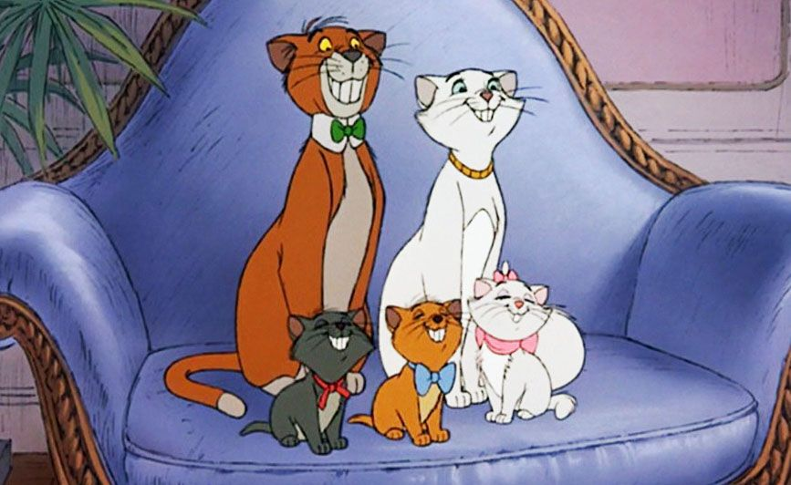

About Marie
She is a white-furred kitten who believes herself to be quite the lady. She is a hopless romantic and daydreamer, frequently lost in her thoughts.
Marie and her family
Marie's characteristics
- She likes when things go her way.
- She is somewhat danger-prone, as she doesn't have much experience with biting and clawing.
- She always wears a big bow around her neck and another on her head.